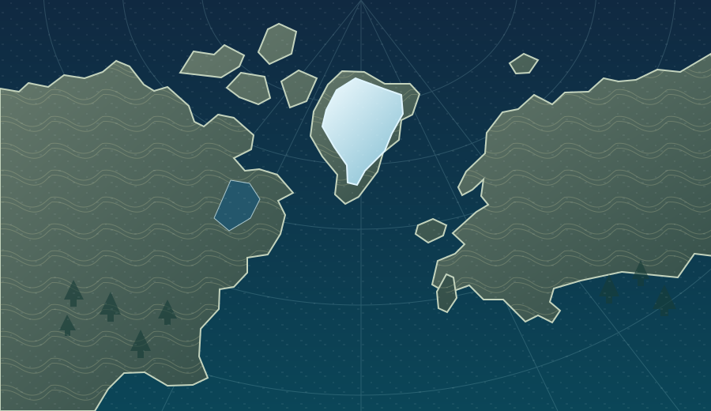
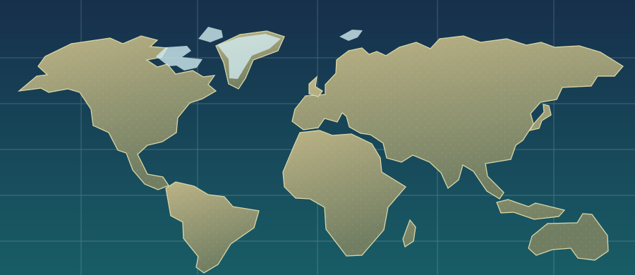

Arctic field station / Unit 5 / Lesson 4
Ice Age Bear
Speciation Explorer
Two bears share an ancestor. What could have separated their populations?
01 / Climate workbench
Move bears as the ice changes
In a glacial period, the climate is colder and land ice grows. In a warmer interglacial period, land ice shrinks. An ice sheet on land is not the same as sea ice over the ocean.
Drag a bear onto a location, or select a bear and then select a location. Place all three in each phase. More than one can share a location.

NORTH ATLANTIC · SCHEMATICWatch the original ice-retreat clip
Watch how the summer ice in the visualization changes from about 18,000 years ago to today. This clip shows the end of one glacial period, not every cycle on our timeline.
Open the original clip in a new tab02 / Fossil archive
Find bears in the fossil record
Open a numbered site to see which bear was found there and how old the fossil is. Keep one polar bear site and one brown bear site for your argument. Pinning another fossil of the same type replaces the one you pinned.

A fossil shows a bear of that kind existed by then. The oldest fossil found is not necessarily the first bear of that kind. Empty map areas do not prove bears were absent.
03 / Inherited-trait workbench
Match traits to habitats
A variant is a version of a gene. Open the three evidence cards to see what researchers learned. Then choose one bear with at least one of the three Arctic clues for the snowy coast, and a bear with darker pigmentation for exposed southern land. Explain why one trait could affect reproduction in that habitat.
Ancestral population / Simulated cards
Who might leave more offspring?
Compare cards, then drag a bear to a habitat or select it and choose a habitat. You can make a different choice and compare it. The illustrations show fur contrast, not what an ancestral bear looked like.
04 / Field report
Revise your case for speciation
Speciation is the process by which one lineage gives rise to distinct species. Separation can reduce gene flow: fewer individuals reproduce across populations. The populations can then change in different ways over many generations.
Keep a backup of this activity
These report files include your Ice Age work and the same name, class period, and Dataset ID as your report. They are for reading or sharing, not for restoring browser work.
Your work is saved in this browser. Use the report to keep a copy.
Sources and model limits
Adapted from OpenSciEd B.5 Lesson 4: Glacial and Interglacial Periods, Bears and Glacial Cycles, Bear Fossils Map, Genetic Bear Data, and Developing an Argument. The bridge draws on the Lesson 5 Student Procedure. The digital maps and tokens are original, schematic illustrations. Token placements and trait combinations are simulated; the published fossil ages are approximate estimates reproduced from the lesson map. We use three variants from the genetic handout; the original chip exercise also draws on the NOS3 clue from Lesson 2.
Original genetics research: Liu et al. (2014); ancient gene flow: Wang et al. (2022). Fossil map sources credited by OpenSciEd: Cahill et al. (2018), Harington et al. (2014), Marciszak et al. (2015), Segawa et al. (2021), Villalba de Alvarado et al. (2022), and Wang et al. (2022).